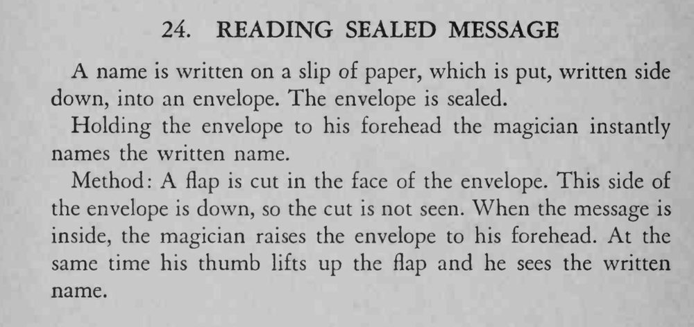

观众把写有名字的纸条装进信封并封口；魔术师把信封贴到额头上，立刻说出了里面的名字。
切口要平整、别让 flap 翘起；掀起只在抬手到额头的一瞬间完成。

A name is written on a slip of paper, which is put, written side down, into an envelope. The envelope is sealed. Holding the envelope to his forehead the magician instantly names the written name. Method: A flap is cut in the face of the envelope. This side of the envelope is down, so the cut is not seen. When the message is inside, the magician raises the envelope to his forehead. At the same time his thumb lifts up the flap and he sees the written name.